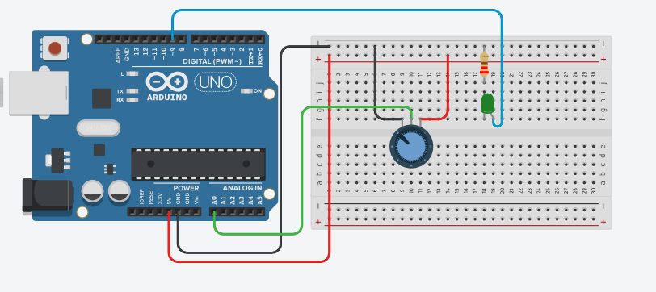

Potentiometer Control Project using Arduino
Learn how to read analog values from a potentiometer and use them to control other components like LEDs, servos, or displays. This project introduces you to analog input and variable control in Arduino programming.
BeginnerComponents Required
- Arduino Uno (or compatible board)
- Potentiometer (10kΩ)
- LED
- 220Ω Resistor
- Breadboard
- Jumper Wires
- USB Cable
Circuit Connections
Follow the steps below to connect the potentiometer and LED with the Arduino board. Make sure the Arduino is not connected to USB while wiring.
- Insert the potentiometer into the breadboard. It has 3 legs: left, middle (wiper), and right.
- Connect the left leg of the potentiometer to 5V on Arduino.
- Connect the right leg of the potentiometer to GND on Arduino.
- Connect the middle leg (wiper) to analog pin A0.
- Insert the LED into the breadboard.
- Connect a 220Ω resistor to the shorter leg (cathode) of the LED.
- Connect the other end of the resistor to GND on Arduino.
- Connect the longer leg of the LED to digital pin 9 (PWM pin).

Here's a simple circuit diagram to visualize the connections. The potentiometer acts as a variable resistor, allowing you to adjust the voltage read by the Arduino on pin A0. The LED brightness will change based on the potentiometer's position, demonstrating how analog input can control an output device.
Arduino Code
/*
Project: Potentiometer Control with Arduino
description: Learn how to read potentiometer values and control LED brightness using Arduino.
Components:
- Arduino Uno
- 10kΩ Potentiometer
- LED
- 220Ω Resistor
- Breadboard
- Jumper Wires
- USB Cable
Author: Circuit Creation RN
*/
// This code reads the potentiometer value and controls the brightness of an LED accordingly.
int potPin = A0; // Analog pin for potentiometer
int ledPin = 9; // PWM pin for LED
void setup() {
Serial.begin(9600); // Initialize serial communication
pinMode(ledPin, OUTPUT);
}
void loop() {
// Read the potentiometer value (0-1023)
int potValue = analogRead(potPin);
// Convert analog value (0-1023) to PWM value (0-255)
int ledBrightness = map(potValue, 0, 1023, 0, 255);
// Set LED brightness
analogWrite(ledPin, ledBrightness);
// Print values to Serial Monitor
Serial.print("Potentiometer: ");
Serial.print(potValue);
Serial.print(" -> LED Brightness: ");
Serial.println(ledBrightness);
delay(100); // Update every 100ms
}
Upload the Code
- Connect the Arduino board to your computer using the USB cable.
- Open the Arduino IDE and paste the code into a new sketch.
- Select the correct board and port from the Tools menu.
- Click the Upload button.
- Open the Serial Monitor (Tools > Serial Monitor) to see the potentiometer values.
Code Explanation
Let us understand how the Arduino code works step by step. This will help you modify the project later and build more projects.
Declaring Pins
int potPin = A0; stores the analog pin where the potentiometer is connected.
int ledPin = 9; stores the PWM pin for the LED.
setup() Function
The setup() function runs only once when the Arduino starts.
Serial.begin(9600) initializes serial communication for the Serial Monitor.
pinMode(ledPin, OUTPUT) tells Arduino that pin 9 is an output.
analogRead() Function
analogRead(potPin) reads the voltage on the analog pin.
It returns a value between 0 and 1023, where 0 is 0V and 1023 is 5V.
map() Function
The map() function converts values from one range to another.
Here, it converts the potentiometer value (0-1023) to PWM value (0-255).
This is necessary because PWM brightness only accepts 0-255 values.
analogWrite() Function
analogWrite(ledPin, ledBrightness) sets the LED brightness using PWM.
PWM values range from 0 (off) to 255 (full brightness).
loop() Function
The loop() function runs continuously.
It reads the potentiometer, converts the value, and updates the LED brightness.
Common Mistakes & Troubleshooting
- LED brightness doesn't change: Make sure the LED is connected to a PWM pin (marked with ~). Pins 9 and 10 on Arduino Uno support PWM.
- Potentiometer not working: Check that the middle pin (wiper) is connected to the analog pin. Verify connections: left to 5V, right to GND, middle to A0.
- Serial Monitor shows only 0 or 1023: The potentiometer might not be wired correctly. Double-check all connections.
- LED very dim or too bright: This is normal. Try rotating the potentiometer to adjust brightness. If still not working, check the resistor value (220Ω or 330Ω).
- Upload error: Select the correct board (Arduino Uno) and COM port from the Arduino IDE Tools menu.
What You Learned
- How to read analog values using
analogRead(). - Understanding analog vs digital inputs and the 0-1023 range.
- Converting values using the
map()function. - Using PWM (Pulse Width Modulation) to control brightness with
analogWrite(). - Using Serial Monitor to debug and view sensor readings.
- Building a practical control system with a potentiometer.
Next Steps
Now that you understand potentiometer control, try these advanced projects:
- Control a servo motor position with a potentiometer.
- Use multiple potentiometers to control RGB LED colors.
- Display potentiometer readings on an LCD screen.
- Combine with other sensors for multi-input control systems.